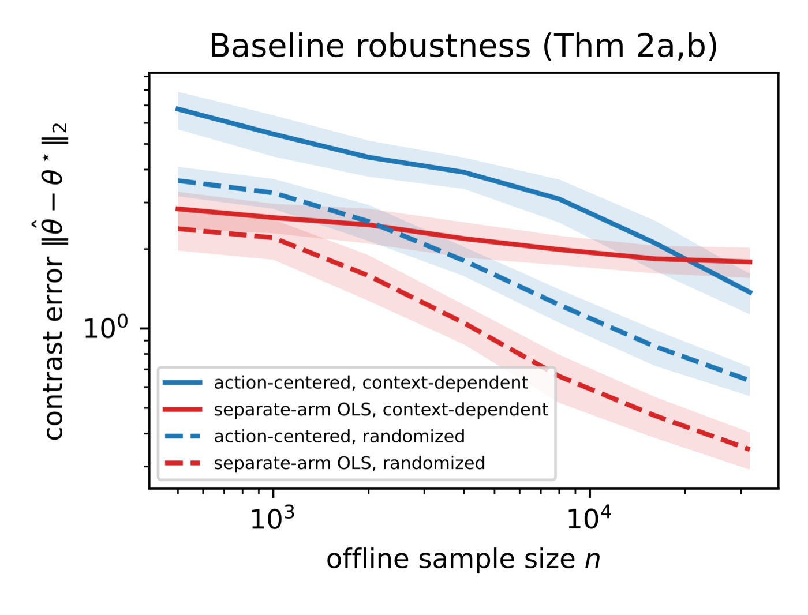
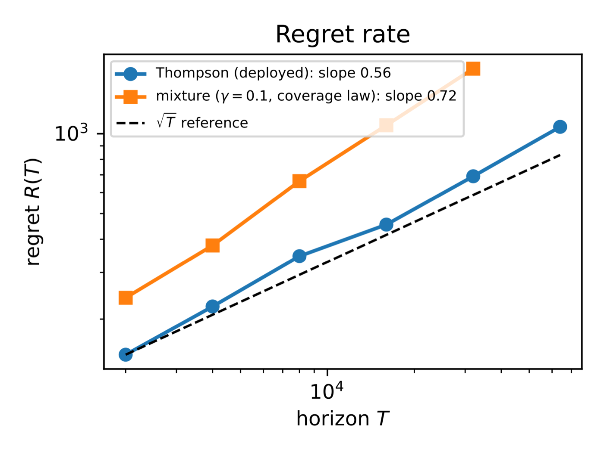

- 後悔 498 対 620予算を守る手法のうち、提案法（Thompson 版）と、報酬を回帰する手法で最良の Raw-Flex-CBwK の後悔。約 20% 小さい（Table 1）。
- \(\widetilde O(Kd\sqrt{T})\)CATE が線形で文脈が i.i.d. のとき、被覆条件を満たす行動規則について示した、確率つきの後悔の上界。\(K\) は有料の処置の数、\(d\) は文脈の次元。
- 支出 599.9 / 600残りの予算で払える処置だけを候補にするので、どの経路でも予算を超えない。予算制御を外すと 2,729 を使った（Table 1）。
予算が限られるときは、反応しやすい人ではなく、処置で上乗せされる効果の大きい人に費用を回す必要がある
Web プラットフォームはユーザーに接するたびに、販促クレジット、引き留めのための割引、クーポン、広告補助といった費用のかかる施策から一つを選ぶ。施策ごとに費用が違い、効果はユーザーによって違い、一定期間の総支出には上限がある。
論文は次の例を挙げる。トラフィックの 20% にしか予算を出せないとする。100 ドルのクレジットの効果が、もともと反応率の高いヘビーな投稿者では +3 ポイント、働きかけで動く中間層の投稿者では +15 ポイントなら、中間層に配るべきである。処置と対照を比べずに反応のしやすさで並べると、この選択を誤る。
こうした逐次の配布には、文脈付きバンディットが標準的に使われる。論文が問うのは、処置によらない基準部分を先に当てはめずに、処置どうしの差を安定して学ぶにはどうすればよいか、である。
結果は処置によらない基準部分と処置効果に分けられ、方策の良し悪しは処置効果だけで決まる
各時点 \(t = 1,\dots,T\) で文脈 \(X_t\in\mathbb{R}^d\) を観測し、販促なしの対照 \(a_0\) と \(K\) 個の有料の処置 \(a_1,\dots,a_K\) から一つを選ぶ。費用 \(c(x,a)\) は既知で、対照の費用は 0 である。期間全体の予算を \(B\)、1 期あたりの予算率を \(\rho = B/T\) とする。結果は次のように分解できると仮定する。
\(f(x)\) は対照のときの期待結果で、処置によらない基準部分である。\(\tau_a(x)\) は対照に対する処置 \(a\) のCATE、\(\xi_t\) は雑音である。どの方策 \(\pi\) でも期待結果は \(\mathbb{E}[f(X)] + V(\pi)\) となり（\(V(\pi)\) は期待 CATE）、第 1 項は方策によらない。そのため、正しく指定された報酬ベースの学習器と CATE ベースの学習器は、同じ制約付き最適解をめざすことになる。
違いは統計面にある。報酬をそのまま当てはめる学習器は、処置どうしの比較で打ち消される非線形な \(f\) までモデル化しなければならない。論文は、これが推定の分散を増やしうること、また報酬のモデルが誤っていると、処置ごとに別々のモデルが異なる文脈分布を見るため、見かけの差が生じうることを指摘する。
目標は期待費用 \(C(\pi)\le\rho\) のもとで \(V(\pi)\) を最大にすることである。予算の双対変数を \(\lambda\ge 0\) とすると、\(\lambda\) を固定したときの最適な行動は文脈ごとに次で決まる。
後悔 \(R(T)\) は予算を期待費用の制約に緩めた線形計画（流体 LP）の最適値 \(T\cdot\mathrm{OPT}_{\mathrm{LP}}(\rho)\) から、実際に選んだ処置の効果の和 \(\sum_t \tau_{A_t}(X_t)\) を引いたもので測る。
行動中心化した特徴で回帰すると、基準部分は期待値の上で消え、逆傾向スコアの重みも要らない
処置 \(a\) の特徴を \(z_t(a) = e_a\otimes X_t\in\mathbb{R}^{Kd}\)（対照は 0）とし、処置ごとのパラメータを縦に並べて \(\theta^\star\) とすると、\(z_t(a)^\top\theta^\star = \tau_a(X_t)\) となる。アルゴリズムは自分が行動を選ぶ確率 \(\pi_t\) を知っているので、特徴の平均 \(\bar z_t = \sum_a \pi_t(a)\, z_t(a)\) を正確に計算できる。そこで次の組で回帰する。
\(\mathbb{E}[u_t\mid X_t,\mathcal H_{t-1}] = 0\) なので、基準部分 \(f\) も、その推定値 \(\hat f\) の誤差も、期待値の上で打ち消される。この推定方程式は、過去のデータだけで決まる \(\hat f\) なら何を使っても（\(\hat f\equiv 0\) でも）不偏で、\(\hat f\) の精度は分散にだけ影響する。逆傾向スコアで重みづけする必要もない。この考え方は Greenewald らと Krishnamurthy らの行動中心化バンディット（BOSE）にもとづく。
アルゴリズムは次の 3 つの部品からなる（図1）。
- オフラインの初期化 記録済みのログから交差適合した二重頑健（DR）擬似結果 \(\psi_i(a)\) を作り、\(X\) に回帰して初期値 \(\hat\theta^{(0)}\) を得る。これをオンライン推定の事前平均にする。同じ結果モデルから基準 \(\hat f\) も作る。ログに傾向スコアが記録されていれば、推定せずにその値を使う。
- オンラインの更新 \(V_t = V_{t-1} + u_t u_t^\top\) とし、\(\hat\theta^{(0)}\) に寄せたリッジ回帰で \(\theta\) を更新する。
- 行動の選び方 予算で調整したスコア \(\hat s_t(a) = z_t(a)^\top\hat\theta - \lambda_t\, c(X_t,a)\) を使い、信頼幅の 2 倍を超えて負けている行動を除いて候補集合 \(\mathcal B_t\) を作る。候補が 1 つならそれを選ぶ。複数なら、\(V^{-1}\) ノルムで最も離れた 2 つを確率 1/2 ずつで選ぶ（farthest-pair 規則）。
双対変数が費用の価格として働き、払える処置だけを候補にするので、どの経路でも予算を超えない
双対変数は \(\lambda_{t+1} = [\lambda_t + \eta_t\,(c(X_t,A_t) - \rho)]_+\)（\(\eta_t = \eta_0/\sqrt T\)）で更新する。予算率より多く使うと \(\lambda\) が上がり、費用の高い処置のスコアが下がる。初期値はオフラインのラグランジュ問題から決める。
さらに各時点で、残りの予算 \(B - S_{t-1}\) で払える処置の集合 \(\mathcal A_t^{\mathrm{aff}}\) だけから選ぶ（\(S_{t-1}\) はそれまでの支出）。費用 0 の対照はいつもこの集合に入るので、有料の処置が払えなくなれば対照に戻る。帰納法で、すべての時点で \(S_t\le B\) が成り立つ。この保証は信頼幅の設定や後述の被覆条件によらない。
一様な探索を常に混ぜることはしない。候補集合 \(\mathcal B_t\) は、予算で調整した差がはっきりすると 1 つに縮み、そこで探索が止まる。論文は一様な探索の下限を置くと、差が残る限り毎回探索するので \(\Omega(T)\) の後悔がかかると述べている。
線形の CATE なら後悔は \(\widetilde O(Kd\sqrt T)\) に抑えられ、処置ごとに別々に回帰すると漸近バイアスが残りうる
定理 1（後悔） 文脈が i.i.d.、CATE が線形 \(\tau_a(x) = x^\top\theta_a^\star\)、雑音が有界で行動と独立、候補集合の上で被覆条件が成り立つ（farthest-pair 規則なら定数 \(\kappa_0 = 1/4\)）、オフラインの初期値の誤差半径 \(\bar\eta\) が与えられる、という仮定のもとで、確率 \(1-\delta\) 以上で次が成り立つ（\(D = Kd\)）。
3 つの項はオンラインの学習、双対変数、初期値の誤差に対応する。\(\bar\eta\) は常に \(2S\)（\(S\) はパラメータのノルムの上限）にとれるので、全体として \(\widetilde O(Kd\sqrt T)\) になる。定数は予算率 \(\rho\) や最小費用 \(c_{\min}\) が小さいほど大きくなり、この保証は正の予算率を固定したときのものである。比較の基準は流体 LP で、付録では流体 LP と、予算を経路ごとに守る最適方策との差が \(\widetilde O(\sqrt T)\) であることも示している。
定理 2（基準部分への頑健性） (a) 中心化したスコアは、過去のデータだけで決まる \(\hat f\) なら何を使っても不偏である。(b) 処置ごとに別々に線形回帰（OLS）すると、係数は \(\theta_a^\star + \gamma_a\) に収束する。\(\gamma_a\) は \(f\) をその処置のもとでの文脈分布で線形に射影した係数である。そのため対照との差には \(x^\top(\gamma_a - \gamma_{a_0})\) のバイアスが残る。割り当てが文脈によらなければこのバイアスは 0 だが、記録された行動が文脈に依存し、線形の報酬モデルが誤っているときは 0 でなくなりうる。(c) 正しい基準を差し引く（\(\hat f = f\)）と、基準の大きさが処置効果の大きさの 2 倍を超えるときなどに、差し引かない場合よりスコアの分散が小さくなる。
後悔の保証が付くのは、被覆条件を満たす行動規則（farthest-pair とその混合）である。実験で主に使う、Thompson 抽出で選ぶ規則はこの条件を満たすとは限らず、論文もこの区別を明記している。
求人プロモーションの実際の特徴量に、シミュレーションした結果と処置効果を組み合わせて評価した
文脈は非公開の求人プロモーションのログから取った標準化済みの特徴量 8 個（求人、企業、投稿者の属性）である。行動は販促なしの対照と、無料トライアル、50・100・200 ドルのクレジットの 4 つの有料の処置で、\(Kd = 32\) になる。1 回あたりの実効費用は実際の利用率を織り込んで 15・30・55・90 ドルとし、最大の費用で正規化している。予算はこの正規化した実効費用にかける。論文は、これは現金支出の代理であり、現金での上限を保証するには費用を保守的に見積もる必要があると断っている。
結果は \(Y = f(X) + \tau_A(X) + \xi\) で生成する。CATE は線形、\(f\) は tanh と交互作用を含む非線形な関数、\(\xi\) は切断した正規分布の雑音である。オフラインのログ \(10^4\) 行は、文脈に依存する \(\epsilon\)-greedy（\(\epsilon = 0.15\)）で作り、傾向スコアを記録する。オフラインとオンラインで処置への反応の仕方をずらすシフトのパラメータ（0〜1）がある。\(T = 6000\)、\(\rho = 0.10\)（\(B = 600\)）とし、32 シードの平均と 95% 信頼区間を報告する。真の CATE が分かるので、流体 LP の最適値と後悔を正確に計算できる。
比較相手は、LinUCB、UCB-ALP、SquareCBwK、同じ予算制御のもとで処置ごとに報酬を回帰する Raw-CBwK、それにオフラインの基準 \(\hat f\) を引いてから回帰する Raw-Flex-CBwK、オフラインの方策を固定した Offline-DR である。提案法は候補集合の中で Thompson 型の抽出をする形で実装し、信頼幅と双対変数のスケールは調整した値を使う。
以下の数値は arXiv v1（2026 年 11 月 6 日）の本文と表による。WSDM 2027 の会議録は 2026 年 11 月時点で未刊行のため、出版版とは照合していない。
予算を守る手法の中で後悔が最も小さく、報酬を回帰する手法の最良より約 20% 小さかった
非線形の基準、文脈に依存するログ、シフト 1 を組み合わせた設定（Table 1）で、提案法の後悔は 498 で、予算を守る手法の中で最も小さかった。報酬を回帰する手法で最良の Raw-Flex-CBwK は 620 で、提案法はこれより約 20% 小さい。シードを対応させたブートストラップ検定では、Raw-CBwK より 220、SquareCBwK より 430 小さかった（いずれも \(p<0.001\)）。
部品を外すと、CATE の初期値なしで 94（95% CI [29, 160]）、基準の差し引きなしで 338（[237, 445]）後悔が増えた。Raw-Flex-CBwK は Raw-CBwK より 98 小さいが、提案法はさらに 122（[60, 178]）小さい。論文はこれを、基準モデルの容量をそろえても行動中心化の利点が残ったと解釈している。
提案法の支出は上限 600 に対して 599.9 だった。予算制御を外したものだけが後悔 −130 とさらに小さいが、予算の約 4.5 倍にあたる 2,729 を使っている。行動規則を変えると、farthest-pair は 1,285、混合（\(\gamma = 0.1\)）は 822 で、どちらも予算は守るが Thompson 版より大きかった。オフラインの方策を固定した Offline-DR は、シフトを 0 から 1 に動かすと後悔が 257 からおよそ 1,200 に増え、提案法は 500 前後のままだった（0.4 付近で逆転）。
文脈に依存するログでは、処置ごとの回帰は誤差が下げ止まり、行動中心化した推定は誤差が下がり続けた
バンディットのループから切り離し、推定量だけを比べた（図3）。文脈に依存するログでは、行動中心化した推定（\(\hat f\equiv 0\) で、中心化だけで基準を消す）は標本が増えるにつれて誤差が下がり続け、処置ごとの OLS は一定のバイアスで下げ止まった。ランダムに割り当てたログでは、どちらも誤差が下がった。図では、標本が小さい範囲では行動中心化した推定のほうが誤差が大きい。
基準の大きさを変えると、基準を差し引いた推定の誤差はほぼ一定で、差し引かない推定の誤差は線形に増えた。ただし差し引く \(\hat f\) の質も効く。\(|f|\approx 4R_{\max}\) のとき、誤差は正しい \(\hat f\) で 0.17、差し引きなしで 3.2 だったが、大きく誤った \(\hat f\) では 8.1 と、差し引かない場合より悪くなった。

Thompson 版は被覆条件を満たさないが後悔の伸びが最も緩やかで、非線形の CATE でも報酬を回帰する手法を下回った
シフトをなくし、予算を緩め、線形の基準を使って、\(\log R(T)\) を \(\log T\) に回帰した傾きを比べた（図4）。Thompson 版は \(6.4\times10^4\) 期まで 0.56（ブートストラップ CI [0.51, 0.61]）、混合は \(3.2\times10^4\) 期まで 0.72（[0.69, 0.76]）、farthest-pair は 0.85 だった。論文はこれを、調整した設定での有限期間の伸び方として報告している。
被覆条件を実測すると、farthest-pair は候補が複数ある各期で \(\kappa_0 = 1/4\) を満たした。Thompson 版は見かけの最良の行動に抽出が集中するため、中央値 0、平均 0.02 だった。それでも後悔は小さく、論文はこれを、十分条件と Thompson 抽出の実際の振る舞いとの差として述べている。スケールの 27 点の感度分析では後悔は 345〜773（中央値 537）だった。スケールの調整にはシミュレータの真の最適値を使っており、実務では推定できる検証用の目的関数が必要だと論文は断っている。
CATE を正弦関数の和にした非線形の設定（Table 2）では、線形版の後悔 945 は報酬を回帰するどの手法（1,009〜1,088）よりも小さかった。最良の Raw-Flex-CBwK との差は 64（[28, 100]、\(p=0.001\)）である。表現をニューラルネットで学ぶ版は 906 だったが、線形版との差 39 は有意ではなかった（\(p=0.11\)）。

費用の違う複数の処置を総予算の上限のもとで逐次に配り、価格 \(\lambda\) のもとで「効果 − \(\lambda\) × 費用」が最大の処置を選ぶ
- 推定するもの 有料の処置それぞれの、対照に対する CATE \(\tau_a(x)\)（理論では線形を仮定）。結果は 1 種類の \(Y\) で、基準部分 \(f\) は推定しなくてよい（差し引けば分散が減りうる）。
- コストの扱い 文脈と処置で決まる既知の費用 \(c(x,a)\)。実験では利用率を織り込んだ実効費用を使う。実際の支払額が利用の有無で変わる点は費用の期待値に織り込むだけで、現金の上限を保証するには保守的な見積もりが必要だと論文は述べている。
- 処置の種類 多値（対照と \(K\) 個の有料の処置）。
- 予算制約 総予算 \(B\) を、払える処置だけを候補にすることで、どの経路でも守る。支出のペースは双対変数 \(\lambda\) で調整する。比較の基準は、期待費用が \(\rho\) 以下という制約に緩めた流体 LP である。
- データ 傾向スコアが記録されたオフラインのログで初期化し、その後は自分で割り当てながら学ぶ。実験は実際の特徴量とシミュレーションした結果による半合成データ。
ROI 順の割当てとの関係を補足しておく（解説者の注）。流体 LP は各人への割り当てを確率的にしてよいとして期待費用を予算以下に抑える問題で、ナップザック問題（処置が複数あるので多肢選択ナップザック問題）の連続緩和にあたる。そのラグランジュ緩和の最適行動 \(\arg\max_a(\tau_a - \lambda c)\) は、有料の処置が 1 つなら \(\tau/c \ge \lambda\)、つまり ROI がしきい値 \(\lambda\) 以上の人に配ることと同じで、ROI の高い順に予算が尽きるまで配る割当てに一致する。処置が複数あるときは、ROI が最大の処置ではなく「効果 − \(\lambda\) × 費用」が最大の処置を選ぶ点が異なる。この論文は \(\lambda\) を事前に解かず、支出の実績から逐次に更新し、同時に \(\tau\) も学ぶ。論文自身は bandits with knapsacks の研究の流れに位置づけているが、ROI 順の割当てとの対応には触れていない。
@misc{lin2026actioncentered,
title = {Action-Centered Causal Bandits for Budget-Constrained Promotion Targeting},
author = {Lin, Yifan and Yang, Kaixu and Mo, Di},
year = {2026},
eprint = {2611.08990},
archivePrefix = {arXiv},
primaryClass = {cs.LG},
note = {Accepted at the 20th ACM International Conference on Web Search and Data Mining (WSDM 2027)}
}